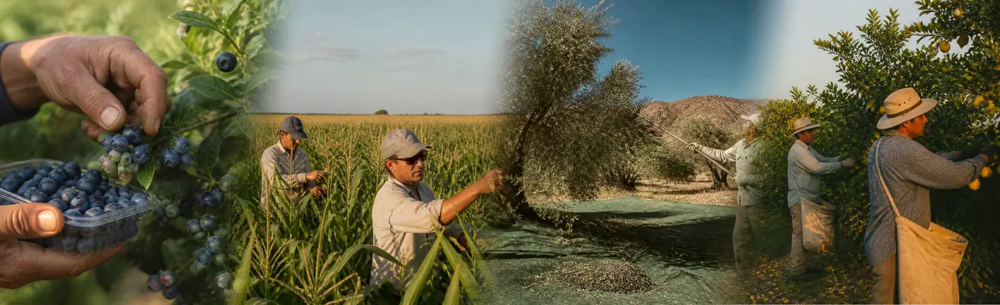
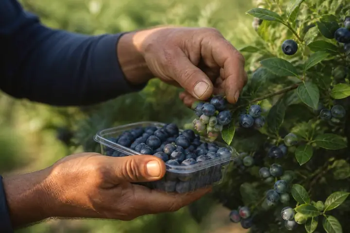
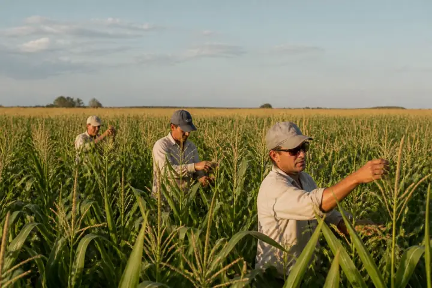
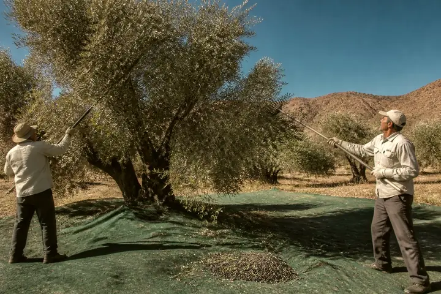
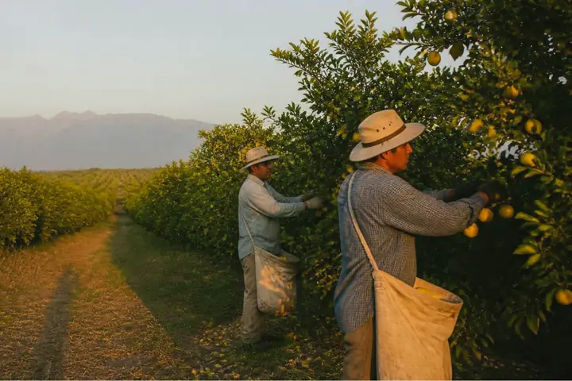
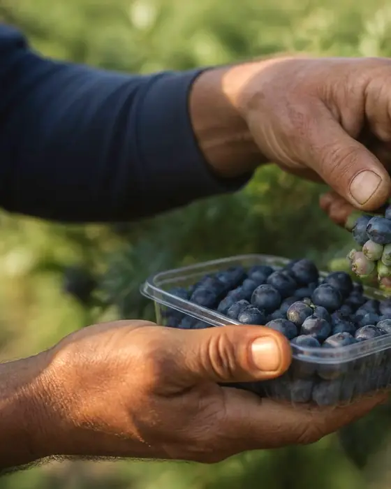

Que tu temporada no se termine.
Un circuito de cuatro cosechas, de agosto a julio. La misma cuadrilla pasa de una a la otra, con pausas en casa.
Estamos preparando el primer circuito.
Recorré el año
- ArándanoTucumán · ago a oct
- DespanojadoBuenos Aires · nov a ene
- AceitunaCatamarca y La Rioja · feb a abr
- LimónTucumán · may a jul
El circuito va de agosto a julio: arándano de agosto a octubre, despanojado de noviembre a enero, aceituna de febrero a abril y limón de mayo a julio, con pausas en casa a comienzos de noviembre y en mayo.
Hoy, la temporada se corta.
Unas 150.000 personas siguen las cosechas cada año, y 35.000 salen de Santiago del Estero en cuadrillas de 13 a 17. Cada campaña dura dos o tres meses. Después toca volver y buscar la próxima, muchas veces sin registro.
Hoy, una campaña suelta≈ 95 jornadas
Con el circuito completo≈ 220 jornadas
- 67%
de los asalariados agrícolas no está registrado.
INDEC 2024, vía Infobae - 6%
de los migrantes rurales accedió a la prestación por desempleo.
OIT, 2026 - 01/09/26
venció el decreto 514/2021, que permitía cobrar un plan social y trabajar registrado en la cosecha.
Huella del Sur, 2026 - 14/12/27
empieza a regir el Reglamento UE 2024/3015 contra el trabajo forzoso: para exportar va a haber que probar quién cosechó.
Reglamento UE 2024/3015, vía Fieldfisher
La oportunidad: que el final de una cosecha sea el comienzo de la siguiente.
Recorré el añoRecorré el año.
Circuito Norte-Pampa: cuatro cosechas y una misma cuadrilla, con base en Santiago del Estero. Elegí un tramo para seguirla.
Pausas en casa, en Santiago del Estero: a comienzos de noviembre y en mayo.
Circuito Andino, ilustrativo: cereza en Chile central, pera y manzana en el Alto Valle, vendimia en Mendoza y San Juan. Los meses todavía no están confirmados.




Tu cosecha, con la cuadrilla planificada.
Contanos cultivo, lugar, fechas y cuántas personas. La propuesta: armar la cuadrilla y coordinar el traslado antes de empezar.
- Cuadrilla armada con anticipación, con un Jefe de Bandada y una de reserva cada diez.
- Altas en ARCA, RENATRE y ART verificadas antes del viaje.
- Cierre con cruce de jornadas, recibos y convenio.
- La misma cuadrilla puede volver la temporada siguiente.
Comisión orientativa sobre la masa salarial
- Con 60 días o más de anticipación
- 6%
- De 3 semanas a 2 meses
- 7%
- Urgente, menos de 3 semanas
- 9%
Propuesta en validación: los cortes exactos se definen con las entrevistas a productores.
Desde el 14/12/2027, exportar a la UE va a exigir probar quién cosechó (Reglamento UE 2024/3015).
- Cultivo
- Fechas
- Resumen
¿Qué cultivo y dónde?
Elegí el cultivo y contanos dónde queda la finca.
¿Cuándo y cuántas personas?
Marcá el inicio y el fin estimado de la cosecha.
Tu estimación
Orientativa, para empezar a hablar. No es una cotización firme.
- Jornalesde lunes a sábado
- Masa salariala USD 28 por jornal
- Movilidadtraslado coordinado, a USD 0,90 por jornal
- Comisión de Bandada
Valores provisorios del plan, en dólares. La comisión es el servicio de Bandada: armado de la cuadrilla, coordinación del traslado y control de altas y alojamiento.
Esta página no envía nada. Prepara el mensaje para que lo mandes vos por Instagram a @bandada.world; te respondemos por ese mismo canal.
Anotarte no tiene costo.
El servicio lo paga el productor: el trabajador no paga por acceder. Contanos de dónde sos y qué cosechaste, y te avisamos las novedades del piloto.

Qué pasa después.
Nos escribís.Mandás el mensaje por Instagram, con tus datos o con los de tu cuadrilla.
Te respondemos.Te contamos los tramos propuestos y las fechas estimadas del piloto.
Te avisamos.Si el piloto se confirma, te escribimos antes de cada tramo.
Un tramo por dentro.
Así proponemos que funcione cada tramo, de la salida al regreso. Se ajusta con el piloto.
-
1
Antes de salir
Alta de cada persona en ARCA, RENATRE y ART, verificada antes del viaje.
-
2
Traslado
Micro coordinado desde Santiago del Estero, con la cuadrilla completa.
-
3
Alojamiento
Revisado con una lista de control antes de cada tramo.
-
4
Cosecha
Registro diario de jornadas y un canal de reclamos anónimo. Si la cosecha se cae, el objetivo es reubicar a la cuadrilla en 72 horas.
-
5
Cierre y regreso
Cruce de jornadas, recibos y convenio. Después, pausa en casa o el próximo tramo.
Estamos preparando el primer circuito.
Registrá tu interés y recibí novedades del piloto.
Hoy
- Contacto y registro de interés por Instagram, en @bandada.world.
- Esta web, con el circuito propuesto y la estimación para productores.
En preparación
- Piloto del circuito Norte-Pampa, con base en Santiago del Estero. Fechas a confirmar.
- Plan de 15 entrevistas a trabajadores, productores y organizaciones del sector.
Lo que el piloto va a probar
- Los cinco pasos de un tramo por dentro, de las altas al cierre.
- Un Jefe de Bandada con un incentivo que paga Bandada, nunca descontado a la cuadrilla.
Preguntas esenciales.
Todavía no. Anotarte registra tu interés para armar el primer circuito: no asegura un puesto ni una cantidad de meses de trabajo.
Nada. El servicio lo paga el productor y el trabajador no paga por acceder.
La Ley 26.727 de Trabajo Agrario los pone a cargo del empleador. Bandada propone coordinar el micro y revisar el alojamiento antes de cada tramo; cómo se le cobra al productor está en validación.
Leer la Ley 26.727 →La Ley 27.742 derogó en 2024 el artículo 15 de la Ley 26.727, que lo prohibía. Igual lo estamos validando con asesoramiento legal antes de operar.
El plan prevé una cuadrilla de reserva cada diez y el objetivo de reubicar a la cuadrilla en 72 horas como máximo, con otros productores del circuito. Es parte de la propuesta y se pone a prueba en el piloto.
Porque compra mano de obra planificada, con altas verificadas y la trazabilidad que va a pedir la exportación. Lo estamos validando en entrevistas con productores.
Ver fuentes y metodología →